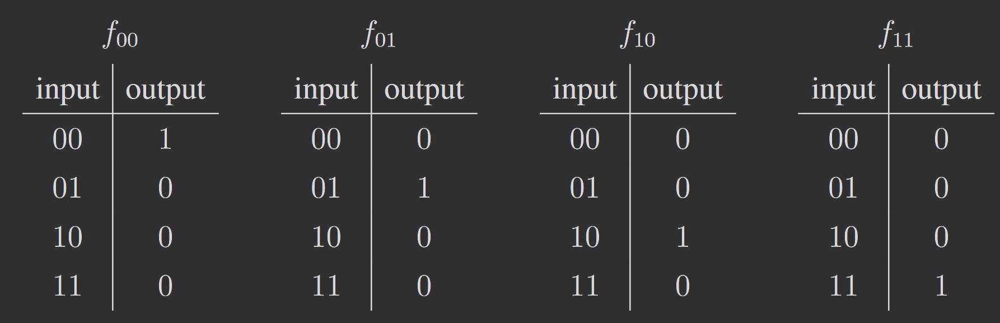
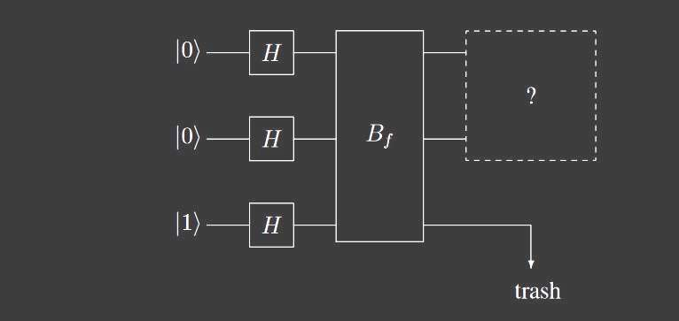
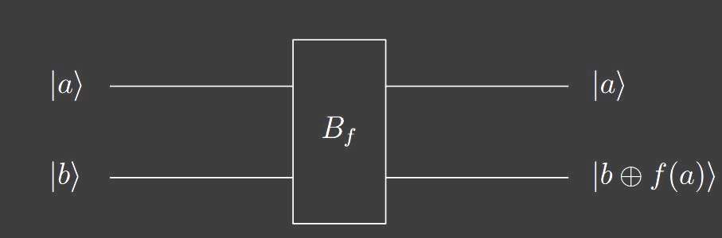
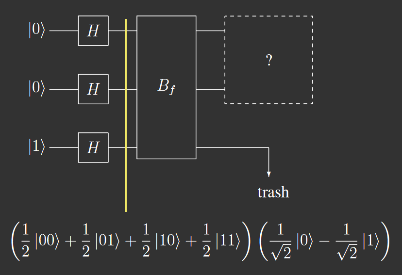
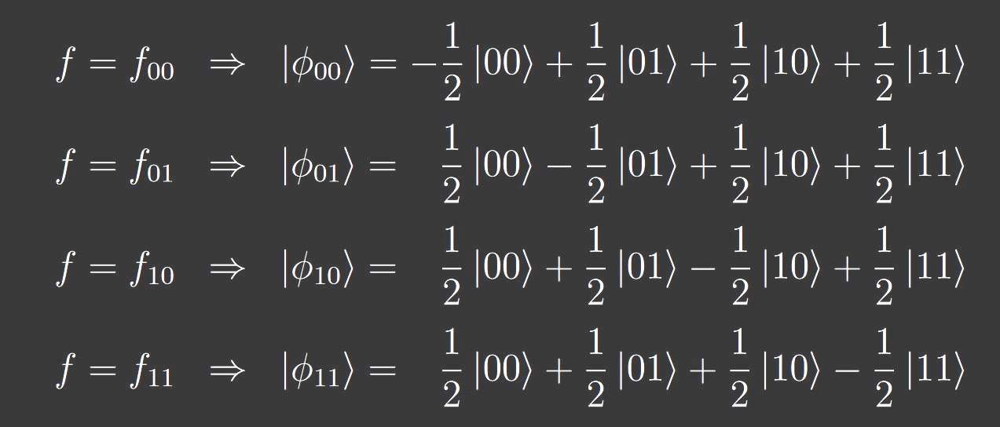
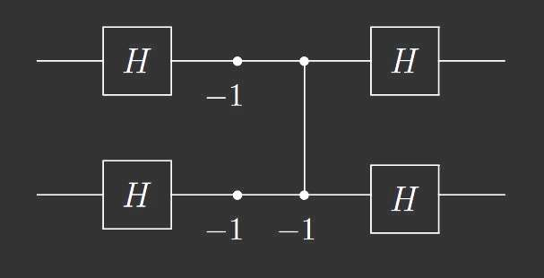

このページはIntroduction to Quantum Computingの輪講のための資料です。
ある特定の状況で量子アルゴリズムが古典的なアルゴリズムよりも優れている一例
他にもある
\(f:\{0,1\}^2 \longrightarrow f:\{0,1\} \) を考える

\(f\)はなに？
前回も登場した\(B_f\)
最初のHadamard変換を終えた段階
途中式説明のためにちょっと整理
\(\displaystyle (\frac{1}{2}\ket{00}+\frac{1}{2}\ket{01}+\frac{1}{2}\ket{10}+\frac{1}{2}\ket{11})(\frac{1}{\sqrt{2}}\ket{0}-\frac{1}{\sqrt{2}}\ket{1})\\ \displaystyle = \sum_{k \in \{00,01,10,11\}} \frac{1}{2} \ket{k}(\frac{1}{\sqrt{2}}\ket{0}-\frac{1}{\sqrt{2}}\ket{1}) \)
ここで\(B_f\)を適用する
\( \displaystyle \sum_{k \in \{00,01,10,11\}} \frac{1}{2}\ket{k}(\frac{1}{\sqrt{2}}\ket{0\oplus f(k)}-\frac{1}{\sqrt{2}}\ket{1\oplus f(k)})\\ \displaystyle =\sum_{k \in \{00,01,10,11\}} \frac{1}{2}(-1)^{f(k)}\ket{k}(\frac{1}{\sqrt{2}}\ket{0}-\frac{1}{\sqrt{2}}\ket{1})\\ \)
そして,\(\displaystyle(\frac{1}{2}(-1)^{f(00)}\ket{00}+\frac{1}{2}(-1)^{f(01)}\ket{01}+\frac{1}{2}(-1)^{f(10)}\ket{10}+\frac{1}{2}(-1)^{f(11)}\ket{11})(\frac{1}{\sqrt{2}}\ket{0}-\frac{1}{\sqrt{2}}\ket{1})\)となりphase kickbackして、
正規直交性がある。
ユニタリ変換したい
\( U= \begin{pmatrix} -\frac{1}{2} & \frac{1}{2} & \frac{1}{2} & \frac{1}{2} \\ \frac{1}{2} & -\frac{1}{2} & \frac{1}{2} & \frac{1}{2} \\ \frac{1}{2} & \frac{1}{2} & -\frac{1}{2} & \frac{1}{2} \\ \frac{1}{2} & \frac{1}{2} & \frac{1}{2} & -\frac{1}{2} \end{pmatrix} \)等価回路
-1は\(\sigma_{z} = \begin{pmatrix}1&0\\0&-1\end{pmatrix}\)
行列にすると、
\((H \otimes H)\) \(\begin{pmatrix}1&0&0&0\\0&1&0&0\\0&0&1&0\\0&0&0&-1\end{pmatrix}\) \((\sigma_{z} \otimes \sigma_{z})\) \((H \otimes H)\)